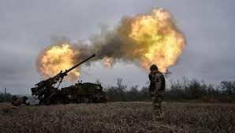

Franciaország úgy döntött hogy megtámadja Nagy-Brittaniát 2024-ben. Oka az volt hogy az angolok loptak tőlük pénzt. Először Londonban csaptak össze ahol a franciák nyertek. A hadjárat 2024 őszéig tartott amikor feladták magukat az angolok. Franciák több területet csatoltak magukhoz. Angliábol nem maradt semmi csak az 1 negyede.
Egy szemtanu ezt nyilatkozta: " Nem maradt semmi se angliábol".